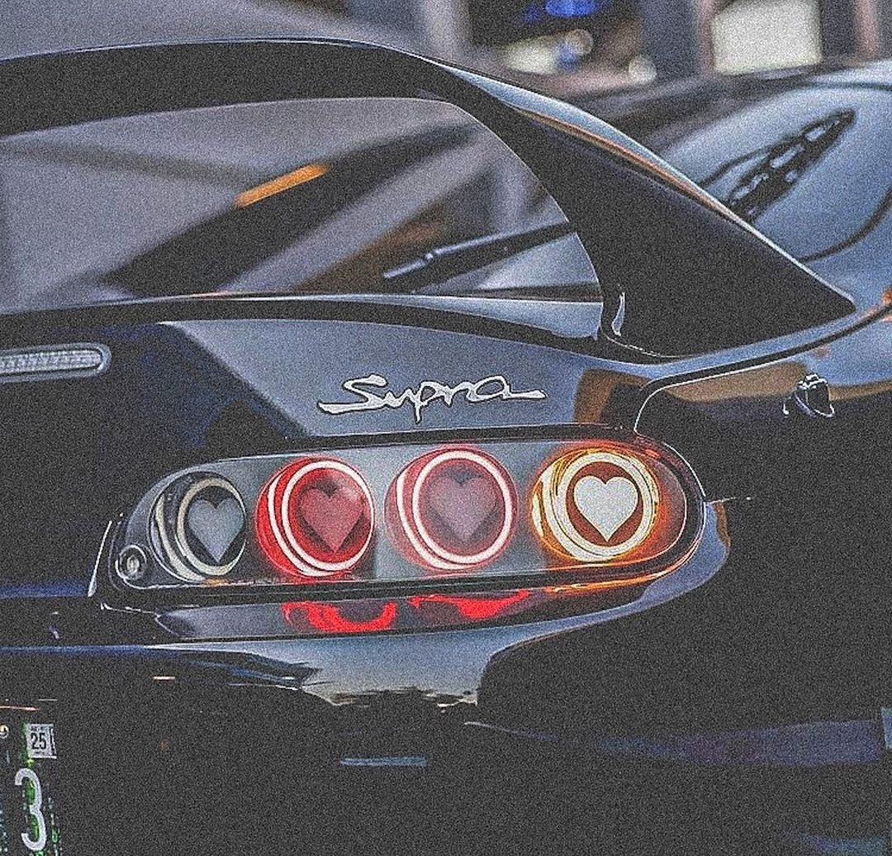

Imagen de un JDM

El Toyota Supra MK IV, producido entre 1993 y 2002, es icónico por su robusto motor turboalimentado de 3.0 litros y su excelente manejo. Su diseño elegante y su rendimiento legendario lo han convertido en un favorito entre los entusiastas de los autos deportivos.
El Toyota Supra MK IV también es conocido por su impresionante capacidad de modificación y su papel en la cultura automotriz, especialmente en el mundo de las carreras y el tuning. Su durabilidad y potencial para alcanzar altas velocidades lo han consolidado como un clásico atemporal en la historia de los autos deportivos.
Salvodor Cano Venegas NO GTI